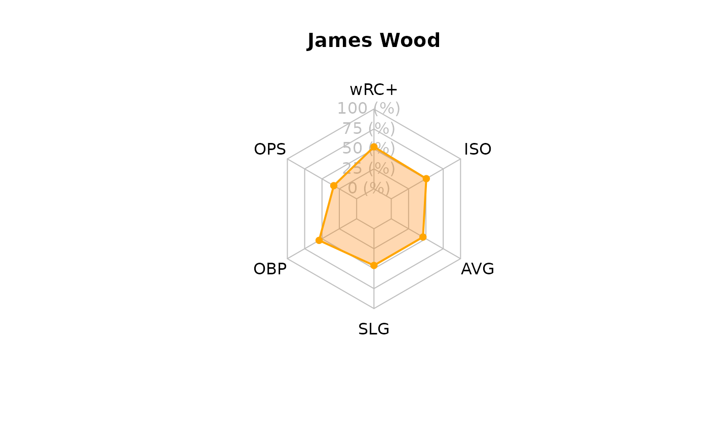

Introduction to webgem
intro-to-webgem.RmdWhat are advanced baseball metrics and why do they matter?
A hitter’s offensive value is not based on one skill. Two players can
have similar overall production while getting there in very different
ways. One hitter may create value by reaching base often, and another
may rely on consistently hit the ball hard. webgem is
designed to help users compare those different parts of a hitter’s
offensive profile.
OBP, or on-base percentage, measures how often a hitter
reaches base through hits, walks, or hit-by-pitches. A player with a
strong OBP helps extend innings and creates more scoring
opportunities, even if they are not always hitting for power.
SLG, or slugging percentage, focuses more on power.
Unlike batting average, slugging percentage gives extra credit for
doubles, triples, and home runs. This makes it useful for identifying
hitters who do more damage when they put the ball in play. A player with
a high SLG is usually contributing extra-base hits rather
than only singles.
OPS (“On-Base Plus Slugging”) combines OBP
and SLG, gives a quick summary of both on-base and power,
and is one of the most reliable measured statistics used to measure a
hitter’s overall offensive production. It’s meant to combine how well a
hitter can reach base, with how well he can hit for average and for
power.
wRC+ (“Weighted Runs Created Plus”) is an advanced
statistic that essentially measures a hitter’s overall offensive value.
It places offensive production on a league-adjusted scale; a value of
100 represents league average, while a value above 100 means the hitter
was better than league average. This makes wRC+ helpful for
comparing hitters because it adjusts for context better than a raw
statistic like OPS.
ISO, or isolated power (ISO =
SLG - BA), is another advanced metric that
measures a hitter’s raw power by calculating how many extra bases they
average per at-bat. It isolates a player’s ability to hit for extra
bases (doubles, triples, and home runs) while completely ignoring
singles, showing whether a hitter’s production is coming from extra-base
hits.
wOBA, or weighted on-base average, gives different
offensive events different values. It is an advanced statistic that
measures a player’s overall offensive value by assigning different
run-values to each way a player can reach base. Instead of treating all
hits equally, it properly weighs hits and walks based on their actual
contribution to scoring runs. A single, double, triple, home run, and
walk do not contribute equally to run scoring.
WAR, or wins above replacement, is an advanced,
all-encompassing statistic that estimates the total number of wins a
player adds to their team compared to a freely available
“replacement-level” player (e.g., a minor leaguer or bench player).
Thus, it attempts to consolidate every facet of a player’s game
(batting, base-running, fielding, and pitching) into one quantifiable
number.
Barrel percentage and hard-hit percentage describe quality of contact. In broader terms, these specific metrics do not tend to focus on the final result of a play, but purely how well the hitter is hitting the ball. A high barrel percentage suggests that a player is frequently making contact with a strong combination of exit velocity and launch angle. A high hard-hit percentage solely suggests that the player is consistently hitting the ball with at a high exit-velocity.
Why use webgem?
While these specified baseball metrics can be exceedingly useful,
they often use different scales. For example, wRC+,
OPS, OBP, SLG, WAR,
and barrel percentage are all useful, but they are not directly
comparable in their raw form. A wRC+ value might be around
100, while an OPS value is typically below 1.000, and
barrel percentage is measured as a percentage.
The challenge is that all of these metrics are measured differently. It is difficult to objectively analyze the full effect of a player’s offensive production (i.e. multiple distinct metrics) without access to quantitative forms of comparison.
webgem is meant to help users compare these unique
metrics.
metricRank()
metricRank() takes a numeric vector and returns category
labels based on threshold values chosen by the user, turning a numeric
statistic into a more readable category. The user can decide and label
what values should as low, middle, or high. This is useful when a user
wants to classify a statistic rather than only view the raw number, or
when comparing many players at once. A column of raw values can be
difficult to scan quickly, but a column of labels makes it easier to
identify which players fall into each performance group.
The function can be used in two ways. With one threshold, it creates
two groups. For example, a user could label every player with an
OPS of at least 0.800 as "strong OPS" and
everyone below 0.800 as "below .800 OPS".
webgem_data$ops_rank <- metricRank(
x = webgem_data$ops,
threshold = 0.800,
lower_label = "below .800 OPS",
upper_label = "strong OPS"
)
webgem_data[, c("player", "ops", "ops_rank")]The function can also use two thresholds to create three groups. In this case, values below the first threshold receive the lower label, values between the two thresholds receive the middle label, and values at or above the upper threshold receive the upper label.
webgem_data$ops_group <- metricRank(
x = webgem_data$ops,
threshold = 0.700,
upper_threshold = 0.850,
lower_label = "low OPS",
middle_label = "solid OPS",
upper_label = "excellent OPS"
)
webgem_data[, c("player", "ops", "ops_group")]Overall, instead of manually writing repeated if_else() statements each time, the user can quickly create readable performance groups for any numeric metric.
hitterProfile()
hitterProfile() creates a profile table for one hitter.
The user provides a player name and any combination of the supported
hitting metrics. The function ignores metrics that are not provided, so
the user does not need to fill in every argument.
For example, a user can select one player from webgem_data and pass
that player’s statistics into hitterProfile().
player_data <- webgem_data[webgem_data$player == "Shohei Ohtani", ]
ohtani_profile <- hitterProfile(
player = player_data$player,
wrc_plus = player_data$wrc_plus,
ops = player_data$ops,
obp = player_data$obp,
slg = player_data$slg,
avg = player_data$avg,
iso = player_data$iso,
war = player_data$war,
woba = player_data$woba,
bb_pct = player_data$bb_pct,
barrel_pct = player_data$barrel_pct,
hard_hit_pct = player_data$hard_hit_pct
)
ohtani_profile#> metric raw_value scaled_value player
#> 1 wRC+ 151.000 67.33333 Shohei Ohtani
#> 2 OPS 0.709 15.57143 Shohei Ohtani
#> 3 OBP 0.335 49.23077 Shohei Ohtani
#> 4 SLG 0.374 24.80000 Shohei Ohtani
#> 5 AVG 0.246 42.66667 Shohei Ohtani
#> 6 ISO 0.128 22.28571 Shohei OhtaniThe output is a data frame with the metric name, the original raw value, the scaled value, and the player name. The raw_value column keeps the original baseball statistic. The scaled_value column converts each metric to a 0–100 scale so the metrics can be compared more easily.
This function is useful because it prepares the data for comparison and plotting. A user can create a smaller profile with only a few metrics or a fuller profile with many metrics, depending on what they want to examine.
hitterRadar()
hitterRadar() takes the profile data created by hitterProfile() and turns it into a radar plot. Because the radar plot uses the scaled_value column, the metrics are shown on the same 0–100 scale.
hitterRadar(ohtani_profile)
The function expects a data frame with at least three important columns: metric, scaled_value, and player. These columns are automatically created by hitterProfile(), so the easiest workflow is to create a profile first and then pass that profile directly into hitterRadar().
The radar plot helps the user see the shape of a player’s offensive profile. Metrics farther from the center represent higher scaled values. This makes it easier to notice whether a hitter is strongest in power, on-base ability, overall production, or quality of contact.
A typical workflow is:
player_data <- webgem_data[webgem_data$player == "James Wood", ]
profile <- hitterProfile(
player = player_data$player,
wrc_plus = player_data$wrc_plus,
ops = player_data$ops,
obp = player_data$obp,
slg = player_data$slg,
avg = player_data$avg,
iso = player_data$iso,
)
hitterRadar(profile)
This workflow shows how the functions are meant to work together: hitterProfile() organizes and scales the statistics, and hitterRadar() visualizes the scaled profile.